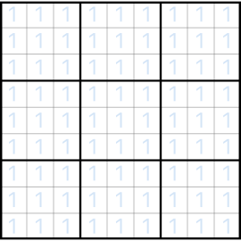

© 2019 Max Khrapov
Licensed under the Apache License, Version 2.0 (the "License")
https://www.apache.org/licenses/LICENSE-2.0
https://www.sansumoku.com/
https://github.com/mkhrapov/sansumoku
Sansumoku is a board game for 2 players. It is a mash-up of Ultimate Tic-Tac-Toe and Sudoku. If you are familiar with these 2 games, you will feel right at home on the Sansumoku board. If not, read on for very detailed instructions on how to play.
Sansumoku is played on a 9x9 grid of 81 cells that is further subdivided into nine 3x3 sections. The players place digits 1 through 9 into cells, one per turn. The first player, Blue, has blue digits. The second player, Orange, has orange digits.
Placing 3 digits of the player's color in a row in a section (horizontally, vertically, or diagonally, same as in regular Tic Tac Toe) will win the section for the player. Hence the game's name. San·su·moku is pseudo-Japanese for "three digits in a row". Winning 3 sections in a row (horizontally, vertically, or diagonally) will win the entire game.
Initially the entire board is open and Blue can place first digit anywhere. The first digit in a section must be 1. The software program helpfully places light blue 1s into every cell to indicate that those cells are open for play.

Let's say Blue plays in the central section, in its top left cell. This most recent move is highlighted in bright blue. If most recent move were by Orange player, the cell would be highlighted in bright orange. This feature is especially useful when playing against the computer. Because Blue played in a top left cell, Orange now must play in top left section. As there are no additional constraints, all cells in top left section are open for play, but Orange must play 1.
Let's have Orange play in the top center cell of its allowed section. Now Blue must play in the top central section of the board. There are additional constraints in play now. They are the same as in Sudoku. Because there is a 1 already in 4th column of the board, a 1 cannot be placed in the left column of the top central section. And because there is a 1 in top row of the board, a 1 cannot be placed in the top row of the top central section. So there are only 4 cells that are open for play now.

Let's have Blue play in the central cell. Now Orange must play in the central section. Because there is already a 1 in this section, Orange must play 2. In general, the software will show you all cells open for play, and what digit must be played in each section.
How to win a section
Consider the following position.
Orange has just played in the central section, bottom left cell. This cell is now highlighted. Blue now has to play in the bottom left section. If Blue plays in the center row, right cell, Blue will have digits 1, 2, and 3 arranged in a horizontal row. This wins the section. Please note that it can be a set of any three digits in any order. As long as they are aligned in a horizontal, vertical, or diagonal row, they win the section. Blue does not have to play this move, but if Blue did, the bottom left section would be won by Blue. Orange would then have to play in the center right section. The board would look like this.
There is another way to win a section — by constraint. Consider the following board position.
Blue has just played in the top center section, bottom right cell. This position is now highlighted. Orange has to play in the bottom right section. The section is currently empty, so Orange has to play 1. It may not play 1 in top row, because there is a 1 in top row of the bottom left section. It may not play 1 in center row, because there is a 1 in the center row of bottom center section. It may not play 1 in bottom left cell, because there is a 1 in the left column of the center right section. It may not play 1 in bottom center cell, because there is a 1 in the center column of the top right section. Orange must play 1 in the bottom right cell. But what happens when Orange does play in the bottom right cell? Blue now has to play 2 in the same section. All the open cells in this section have the same constraints for 2. The only cell that has no constraints is already occupied by 1. Blue has no options to play! In this case Orange wins this section, but as a consolation prize, Blue now has the right to play in any legal cell in any open section. Section won by constraint is marked with a grayed out circle. The board now looks like this.
Another case where an opponent gets this wildcard play is when the opponent is sent to a section already fully occupied or already won by either player. Consider the following board position. Blue has just played in the bottom right section, top right cell. Orange ordinarily would have to play in top right section. The top right section, though, has already been won and thus is not open for play. In this case Orange gets the right to play in any open section's any legal cell. The board looks like this.
How to win the game
In the game state shown below, Blue has to play in the bottom right section. If Blue plays in the top center cell, the player will have 3 digits of blue color in a row, thus winning that section. Because Blue already has won bottom left and bottom center sections, by winning bottom right section Blue will have won 3 sections in a row, thus winning the entire game.
Blue's winning the entire game is shown by the heavy red stripe going through the won sections. They must be in a row horizontally, vertically, or diagonally. The game is over. If neither player is able to win three sections in a row and the board is full, then the game is a draw.